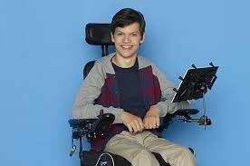
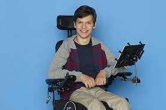

According to a study from the Media, Diversity and Social Change Initiative,
in the top 100 films, only 2.4% of characters have a disability. This is in stark contrast
to the nearly 20% of the U.S. population (according to U.S. census bureau). Of the 2.4% represented,
90% are not even played by actors of that disability, including one of the most famous/infamous wheelchair-background
characters in media right now, Artie from Glee
(read about the controversial casting decision here). The few characters that are portrayed with disability,
are portrayed as helpless, and used simply as "inspiration porn", or worse, as having lives not worth living
see the debate behind the movie Me Before You . People with disabilities need the chance to see themselves on the big screen as fleshed out, fully formed characters
played by people who also have that disability. One positive example of this is with ABC show, Speechless, which features a nonverbal character with cerebral palsy,
played by Micah Fowler, who has CP in real life. Read more about here!
 
